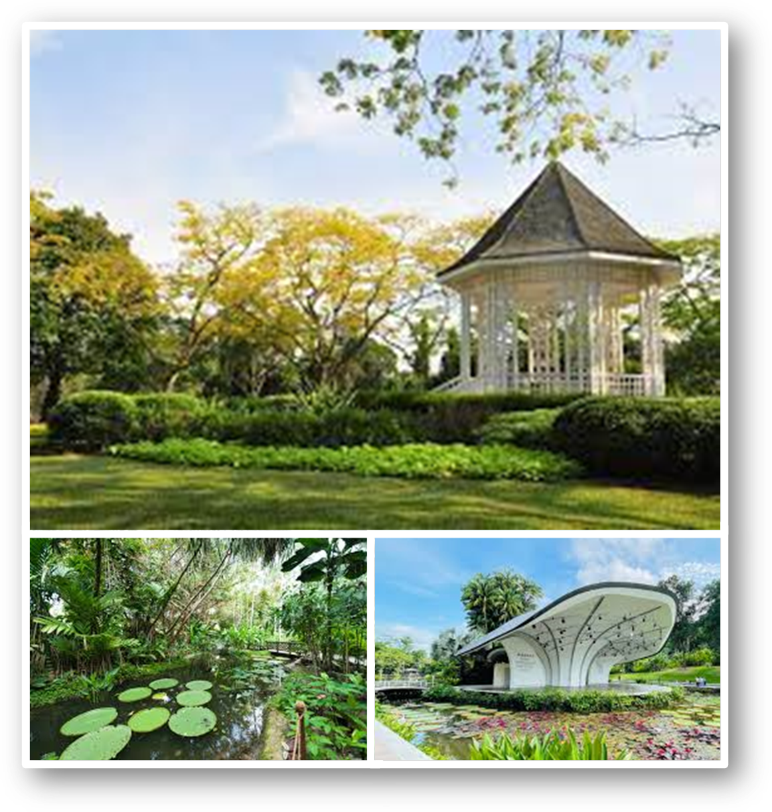
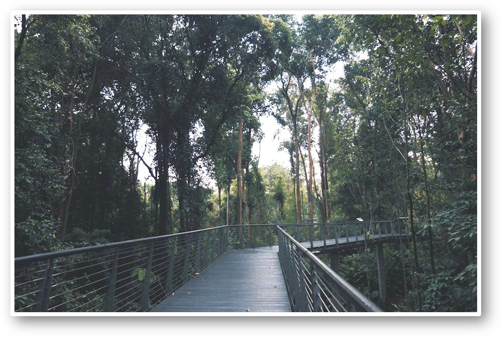
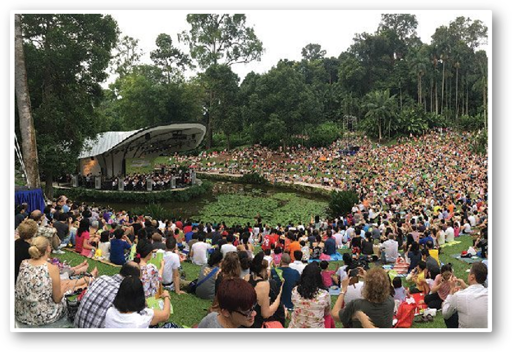

First UNESCO Heritage Site in Singapore
Singapore Botanic Gardens
First UNESCO Heritage Site in Singapore
Singapore Botanic Gardens
|  | Who We Are |
|
Established in 1859, the 82-hectare Gardens holds a unique and significant place in the history of Singapore and the region. Through the botanical and horticultural work carried out today, it will continue to play an important role as a leading tropical botanical institute, and an endearing place to all Singaporeans. The Gardens has been inscribed as a UNESCO World Heritage Site at the 39th session of the World Heritage Committee (WHC) on 4 July 2015. The Gardens is the first and only tropical botanic garden on the UNESCO’s World Heritage List. It is the first in Asia and the third botanic garden inscribed in the world following Orto Botanico di Padova and the Royal Botanic Gardens, Kew. |
| Activities | |
|
1. Guided Tours Our volunteers conduct different tours each weekend (held on Saturdays, except on the 5th Saturday of the month). These walking tours are free so pick one and bring your family and friends for a fun and educational day out! - National Orchid Garden - Gallop - Rain Forest and many more! Click here to find out about registration and available tour timings. |

|
|  |
2. Hiking Lace up those hiking shoes ‘cause you’re in for an adventure. Situated within the garden’s Tyersall-Gallop Core, the Learning Forest features interconnected boardwalks and elevated walkways for you to explore. Feast your eyes on a range of habitats, including freshwater forest wetland and lowland rainforest. |
|
3. Enjoy music while having a Picnic! This is the most popular hangout in the entire Gardens. The Shaw Foundation Symphony Stage sits on an islet in the middle of a lake and plays host to incredible orchestra performances. Pack a picnic bag, head over with the fam and enjoy the melodious sounds while basking in the beauty of nature. |
 |
| Find Us | |
| Click here to download the map. | |

|
|